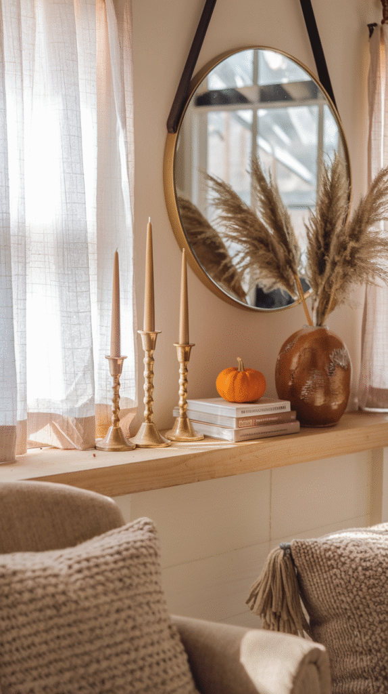
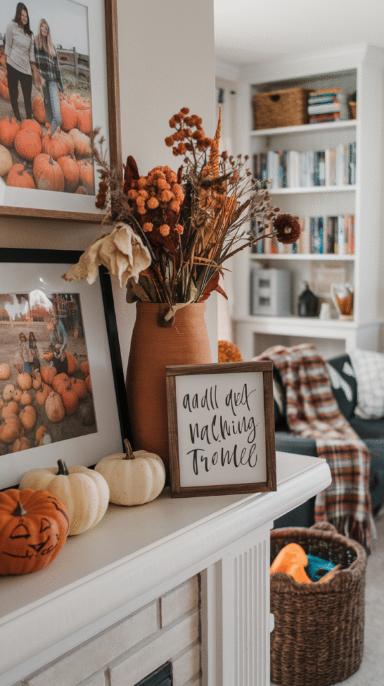
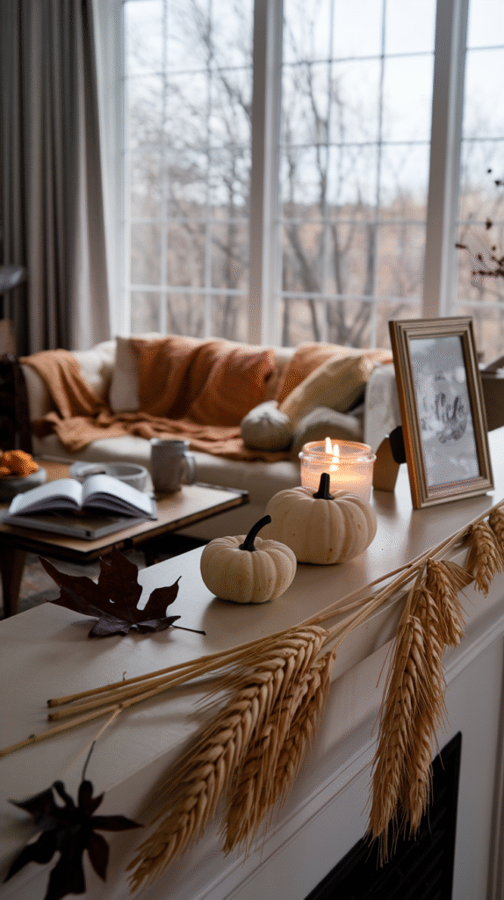
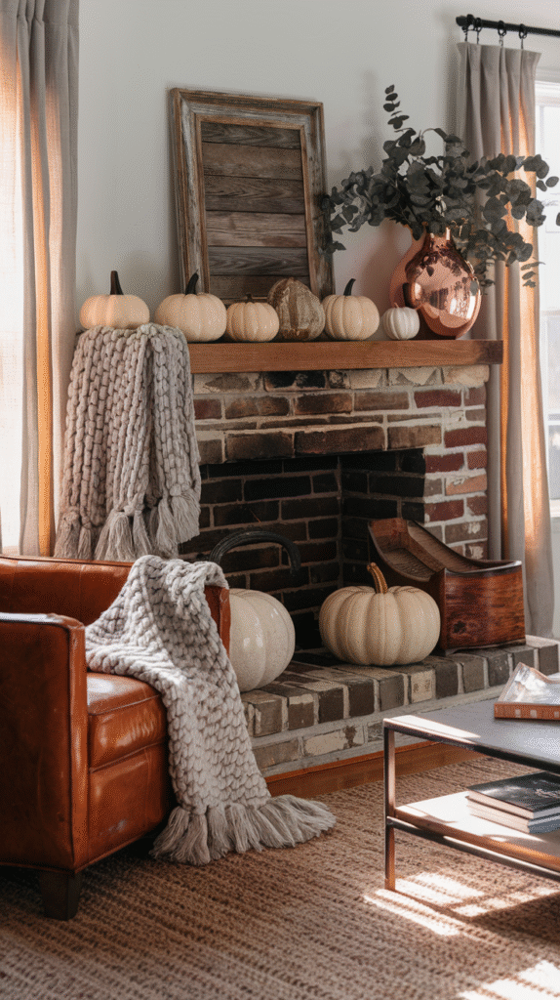
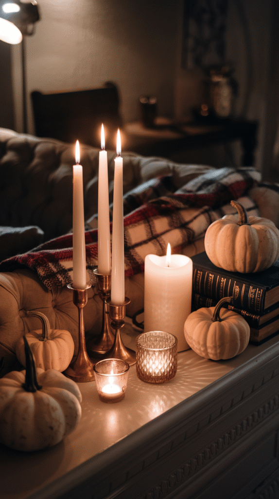
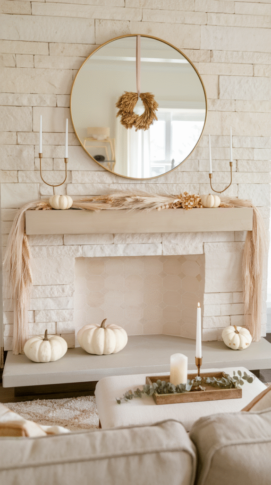
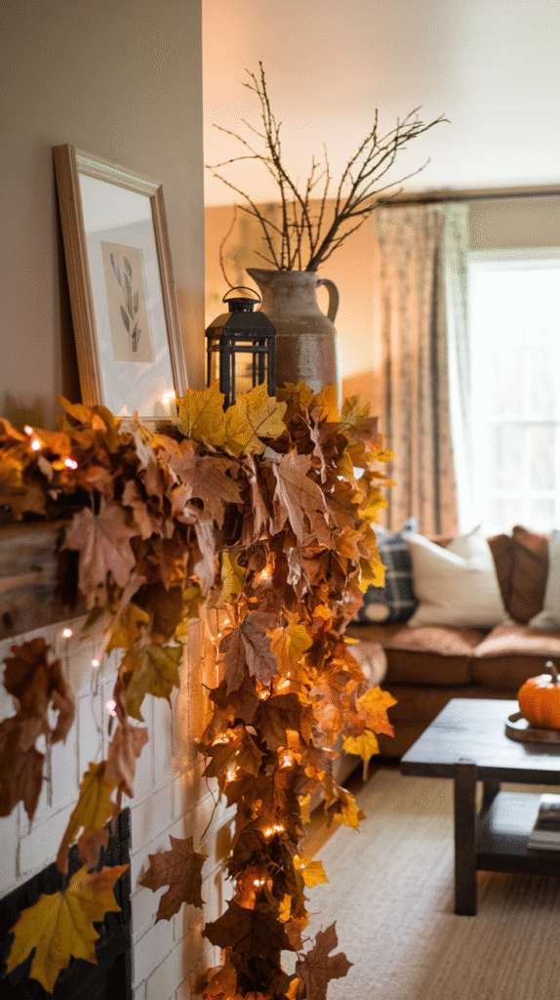
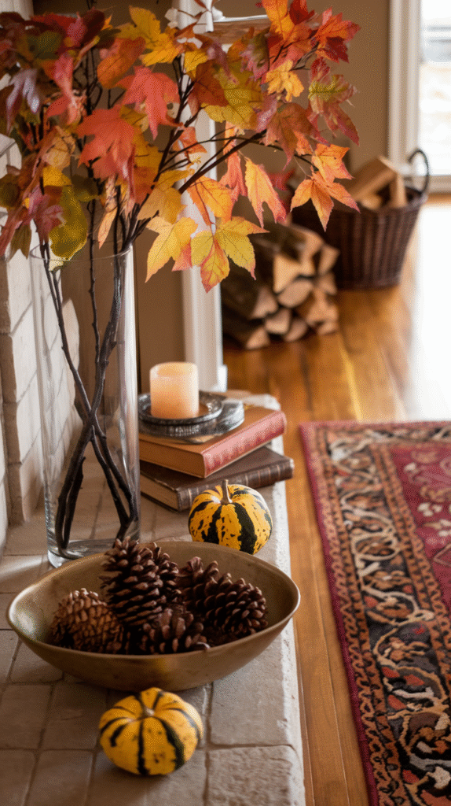
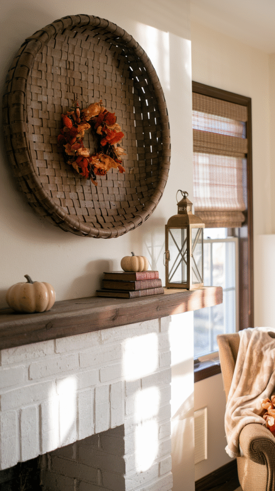

A fall mantel with all the right individual pieces can still look thrown together.
The difference between that and a genuinely styled one usually isn't the items themselves, it's the technique behind how they're arranged.
This covers the actual approach, not a shopping list.

1. Swap Small Details as the Season Moves
A few easily changed pieces, a runner, a small cluster of accents, let the mantel shift from early to late fall without a full redo.
This keeps the display feeling current through a season that spans noticeably different weather and light.

2. Balance Symmetry and Asymmetry
A fully symmetrical arrangement reads as formal and classic; an asymmetrical one reads as more relaxed and collected.
A blend, symmetrical candlesticks flanking an asymmetrical cluster of smaller objects, for instance, often reads as the most sophisticated option of all.
3. Make It Personal
A family photo, a meaningful object, or a piece collected over time gives the mantel a specific identity rather than a generic seasonal display.
This is what separates a mantel that looks like a catalog photo from one that looks like it belongs to the people living in the house.

4. Bring in Real Natural Elements
Real or high-quality faux branches, pinecones, or dried botanicals add texture and seasonal signaling that manufactured decor alone can't match.
This also tends to soften an otherwise very styled, curated arrangement with something that reads as organic.

5. Mix Textures Deliberately
Smooth ceramic, rough wood, soft greenery, and a bit of metal together create the layered, tactile feel that makes a mantel read as professionally styled.
Too many of the same texture or material, even in different colors, flattens the arrangement visually.

6. Add Candlelight
A cluster of candles at varying heights adds warmth and a soft glow that no other single element replicates.
This also naturally reinforces the layering principle, since different candle heights do double duty as part of the depth arrangement.

7. Choose a Palette Like a Designer Would
Two or three colors, repeated across different objects, read as considered in a way that a wider, unrelated color mix never does.
A single varied material, different wood tones, for instance, can stand in for a traditional color palette just as effectively.

8. Commit to a Garland or Skip It
A garland draped along the mantel's edge adds a base layer of texture and movement that individual objects alone can't provide.
A half-hearted, too-short garland looks worse than no garland at all, it's worth using enough length to drape properly or leaving it out entirely.

9. Layer From Back to Front
Taller pieces go in the back, medium pieces in the middle, and small accents in front, the same depth principle that makes any styled vignette read as full rather than flat.
Skipping a layer is one of the most common reasons a mantel feels thin even when it technically has enough objects on it.

10. Start With a Focal Point
A mirror, a piece of art, or one standout object gives the whole arrangement a clear starting point to build around.
Choosing this first, before adding any smaller pieces, keeps the mantel from becoming a collection of equally-weighted objects competing for attention.

Final Thoughts
None of these 10 techniques require starting over if a mantel already has decor on it.
Check the layering and the palette first, since both have the biggest effect on whether the arrangement reads as styled or scattered.
The technique matters more than any individual piece on the mantel.
Apply it to whatever's already in the house before buying a single new seasonal object.